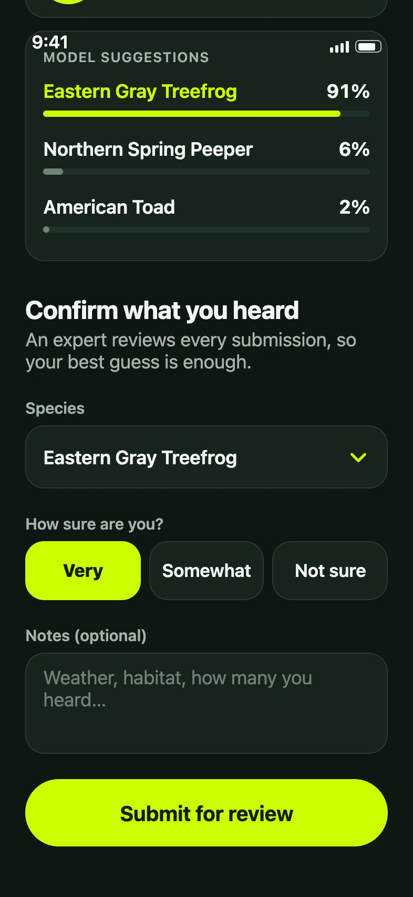
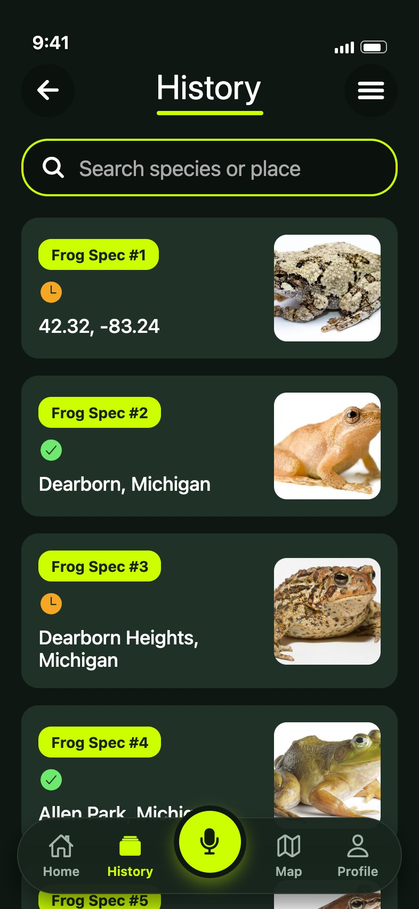
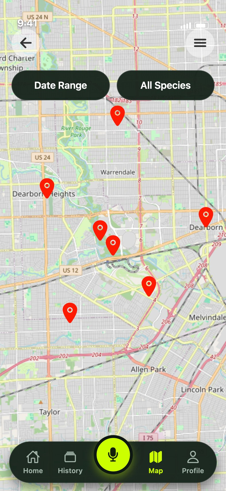
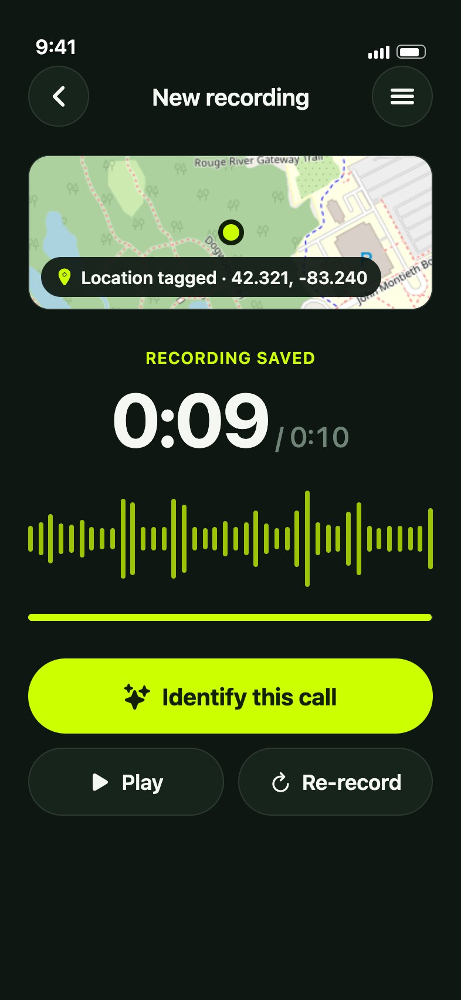

Volunteers can hear frogs. Most can't name them.
Friends of the Rouge tracks watershed health through frog calls recorded by volunteers: outdoors, at dusk, one-handed. They needed data they could trust from people with no training.
Record. Identify. Submit.



One job per screen.
My first design put recording, the result and editing on one screen. Testers rejected it. Now each screen has one obvious next step.
Instead ofEverything on one screen

Built for a field, not a desk.
High contrast, 18pt text and large targets, so it reads at dusk and works with one thumb.
Instead ofA light pastel theme with small controls
Show the frog. Let a human decide.
A photo of the species sits beside the model's confidence, the volunteer confirms in plain language, and an expert makes the final call.
Instead ofA thumbnail and a percentage
Recording is one tap from anywhere.
It is why the app exists, so it sits in the centre of the tab bar on every main screen.
Instead ofOne of six equal tiles on a home hub
Approved by testers and the client. A volunteer with no training can now submit a recording an expert can verify.
Measured in field testing of the shipped release. The design shown here is my 2026 redesign of it, built in the app's codebase and not yet tested with volunteers.
I polished my first design before anyone had used it. Finding that out in Figma cost one iteration. Now I test while the work is still rough.